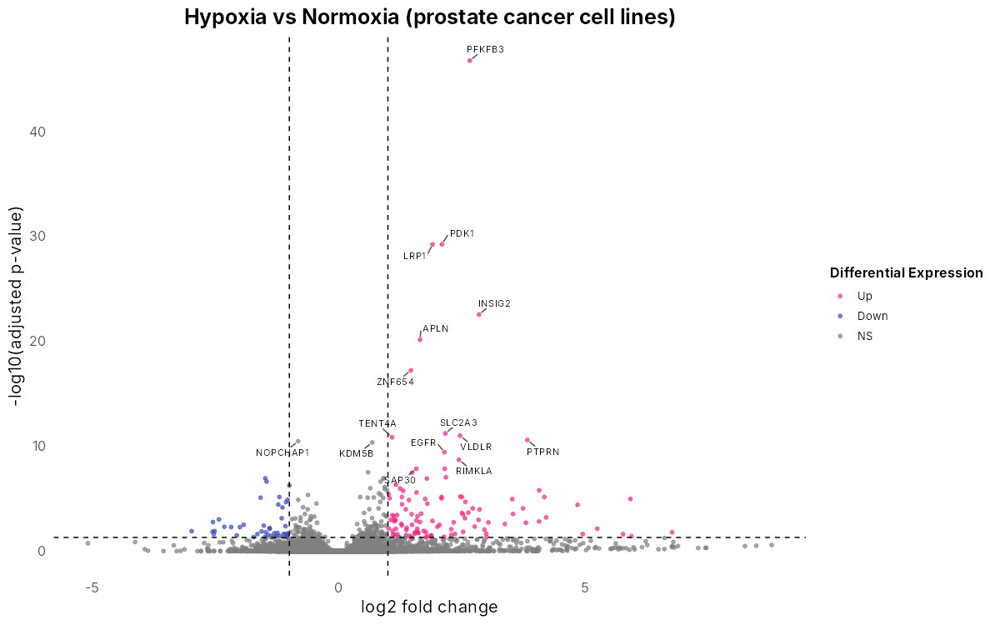

RNA-seq Differential Expression App
A no-code app for bulk RNA-seq. Upload a count matrix and a sample sheet, choose the control group, and the app runs DESeq2, adds gene names, and produces volcano plots, heatmaps, bar plots and downloadable result tables.
Validated: results are identical to running DESeq2 directly, on two public GEO datasets.